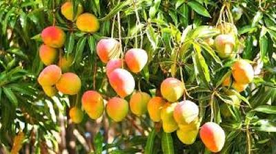

Origin and Botanical Features Mango is native to the northeastern Indian subcontinent, including modern-day India, Bangladesh, and Myanmar, and has been cultivated for over 4,000 years. The mango tree can grow 30–40 meters tall with a wide crown and long taproots, and some trees continue to bear fruit for over 300 years. Mango leaves are evergreen, changing from orange-pink to dark green as they mature, and the tree produces small, fragrant white flowers in terminal panicles. The fruit itself is a drupe, containing a large central seed, and varies in size, shape, skin color, and flesh color depending on the cultivar.
MY FRUITS Gallary